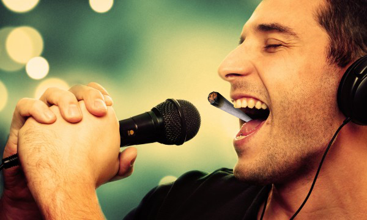
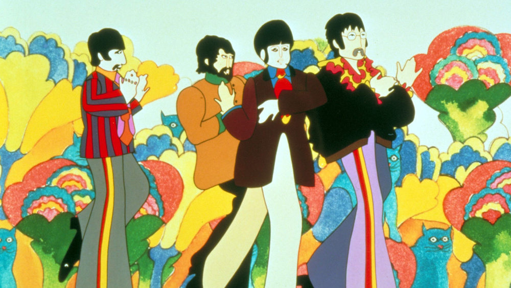
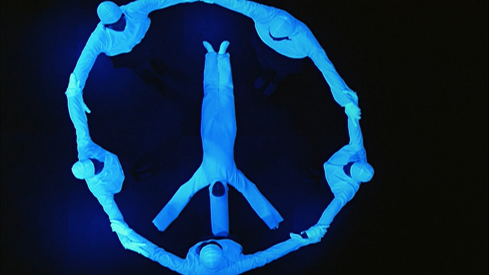
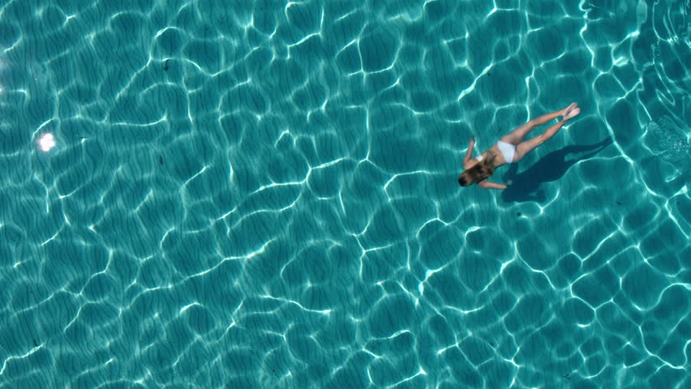

1. Sing Karaoke!

This might not sound like something you'd be interested in, however you may be suprised. I'm definitely not one
to be singing while sober but when I'm baked I'm always singing like a god damn madman. It feels great and you should
try it.
2. Watch a Trippy Movie or Video

This one may be obvious but I really felt that it needed to be listed here because it's one of my favourite
things to do when I light up.
Some of my favourites are:
- Yellow Submarine
- Mushrooms
- The Skeleton Dance
- Fantasia by Guldies
- Pink Elephants
- Basketball Jones
3. Listen to Music in the Dark

Music by itself is already one of the greatest things we have and listening to music whil baked is even better, but
what really takes the cake is listening to music while baked in the dark. Turn on your favourite (trippy!) playlist, flip off
the lights and close your eyes.
Here are some of my favourite songs to listen to while blazing:
- White Rabbit
- Space Oddity
- Learning To Fly
- Bike
- What's The New Mary Jane
- No Quarter
4. Run, Jump or Swim

The possibilites with this one are endless. Go for a run in the dark while listening to music, jump on a trampoline, go
on a hike, swim in some water, etc. Hopefully you're in a place where you can do at least one of these things.
5. Work on Something you Appreciate
This one may be a bit abstract but hear me out. Just try doing something that you truly appreciate, even if you don't think
it would really match well with weed. You may be suprised. If you're an artist you may stop being such a perfectionist, if you're
trying to solve a problem you may find it easier to think outside the box.
This is absolutely one of my favourite things to do while smoking cannabis and I find that it brings the most long
term satisfaction. If you don't think you've got anything that you appreciate then try picking up something new, the sky
is the limit.